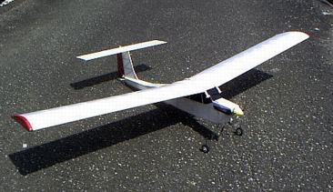
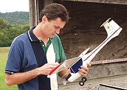
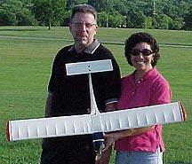
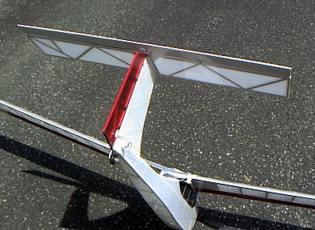
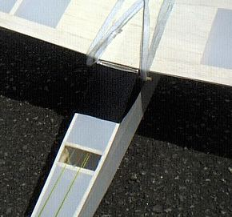

飛行日誌
NORA400 自作

| 全長 | 875mm |
| 全幅 | 1431mm |
| 全備重量 | 590g （目標値：600g） |
| 主翼面積 | 27.0 dm2 |
| 翼面荷重 | 21.9g/dm2 |
| 主翼翼型 | NACA 6412 |
| モ－タ－ | QRP HYPER 400/35T-RV |
| ギヤユニット | QRP 400BB ギヤダウン・ユニット |
| ギヤ比 | 2.25:1 （標準仕様） |
| プロペラ | CAM 9×5 折りペラ |
| バッテリ－ | 7N-500AR, 8.4V Ni-Cd (SANYO) |
| サ－ボ | Futaba S3103 (9.5g)×２、エレベーター・ラダー |
| 受信機 | Futaba R114F (10.9g) |
| アンプ | SKYLINE 22 (Max 22A) |
設計・製作のきっかけ
アメリカの大手模型販売店 http://www.hobbylobby.com/ を眺めていたら、いわゆるパークプレーンサイズの可愛い機体が目についた。Nora ARTF Parkflyer という商品名で、価格は109ドルほど。もとより買えるお金も無いので記事と画像をダウンロードしてつらつらと眺める。うん、なかなかカッコイイ。


| 本家 NORA Parkflyer ARF kit | |
| 全長 | 610mm |
| 全幅 | 1,067mm |
| 全備重量 | 約453g |
| 主翼面積 | 15.5 dm2 |
| 翼面荷重 | 29.2g/dm2 |
| モ－タ－ | 280 クラス |
| ギヤユニット | 280 クラスギヤダウン・ユニット |
| バッテリ－ | 300MAh Ni-Cd |
| 飛行時間 | 最大15分程度 |
元のキットは280モーターのギヤダウン仕様であるが、ちょっとサイズを大きくして400ギヤダウンにしたら面白いのでは？ などと考えてみる。スカイカンガルー電動仕様で、ゆっくりズム飛行の面白さに目覚めてしまったのだが、10クラスのエンジン機をそのまんま400ギヤダウンで電動化したので、いささか重量が重いのが気になっていた。そこで、究極のゆっくりズム低空周回飛行練習機！ を作ろうか、と考えていた。
そんな折り、ラジコン技術の９月号に自作軽量パークプレーン「コメット」が出ていた。グライダーで有名な長谷川克（まさる）氏の記事である。NORA Parkflyer とほぼ同じサイズで、モーターも同じ280クラスのギヤダウンであるが、とても軽く、全備重量は330g で収まっており、翼面荷重は17.2g/dm2 である。これならゆっくりふんわり飛ぶだろうなぁ、と感心する。
これまで作った機体では、QRPのモグラ400が全備重量470g、スカイカンガルー電動仕様が720g、であった。いくらがんばってもモグラ400とほとんど同じ動力・機材を使って、あのスリムで何も余分なところが無い機体より軽く作れるわけがないので、目標重量500g！と言いたいところであるが、やはり600gくらいが現実的な線かな...と妥協してしまった。目標の翼面荷重を20.0g/dm2とすると、翼面積は30dm2必要であり、翼弦長200mmでも翼幅1500mmとなる。ううむ、ちょっと400クラスでは大柄すぎるかなぁ....などと悩む。
悩んでいても始まらないので、おおよその設計目標を定め、パソコンに向かいCADを立ち上げて、参考画像を見ながら機体のアウトラインを描き始めた........
設計目標
- 400クラスモーター＋ギヤダウンユニットで飛行可能な、最も大柄な機体とする。パークプレーンクラスの小柄な機体も魅力的であるが、大きくてゆったり飛ぶ飛行機を目指す。翼幅は1400～1500mm程度。
- 翼面荷重を20.0～25.0g/dm2程度に押さえ、低速で飛行可能な機体とする。風が吹いたときには飛ばさない（飛ばせない）無風・微風時専用の機体とする。
- 初心者（自分も含めて）がある程度安心して飛ばせるような強度を有すること。極限までの軽量化は行わない。
- 本家の NORA Parkflyer ARF kit のイメージを活かした逆スケール機？ とする。特にＴ尾翼は譲れない。（笑）
- タキシング、地上滑走→離陸→タッチアンドゴーなどを楽しむため、車輪はしっかり装備する。本家のテールはソリ状になっているが、小さな尾輪を付け滑走性能を良くする。
主翼の設計・組立
主翼の翼型は、長谷川氏の「コメット」を参考にして、
・低速性能が良く、
・滞空性能に優れ、
・厚翼なため、強度を大きくできる
という利点を持った NACA6412に決定。というかそのまんま。
翼型の画像データは、UIUC Airfoil Coordinates Database からダウンロードさせていただいた。
翼下面にキャンバーのついた翼型は作るのが少々面倒になるのだが、なんとかなるだろうと楽観視して断面の構造を検討する。総重量600g程度の機体であれば、ムサシノ機のように上下面ともプランクを行わなくてもなんとか持ちそうな気がしたが、翼弦長を200mmとすれば、スカイカンガルーやプレイリーにも流用でき、フラットボトムとNACA6412の違いを較べられるかも？などと欲が出てきた。結局、スパーとして5mm角バルサ棒を上下に配し、その片側（中央部は両側）を1mm厚バルサの桁間補強材で張り、上下面を1.5mm厚バルサでプランクするという、ムサシノ機そのままの作りになってしまった。前縁材は5mm×10mmのバルサ棒、後縁上下面は1.5×20mmのバルサを用いた。
リブの形状をプリントアウトし、2mmベニヤに写し取り、リブの型を２枚作った。ヤスリで綺麗に整形したあと、なんの気なしに定規を当てると所定の寸法に足りない。ウゲゲ！と驚きながらチェックするとプリントアウトの設定ミスで200mmのはずの翼弦長が195mmしかない。同時にプリントアウトして切り張りした主翼の平面図も同様に小さく印刷されている。ムム、今からベニヤリブを削り直すのもおっくうだなぁとズルを決め込み、そのままの寸法で作業を継続した。（実はこれがあとで幸いすることとなった）
電動化したスカイカンガルーの主翼は、生地完成で141g、フィルム貼り後では175gという重量であった。これよりは軽くしたいと思いつつ、キッチンスケールと首っ引きで製作した結果、生地完成で128g、フィルム貼り後で152gと、約20gほど軽量になった。
以下、組立の詳細は、紙数が増えてしまうので、こちらに載せておきます。どうぞ参照下さい。
尾翼の設計・組立
インターネットで調べたところ、Ｔ尾翼の利点・欠点は以下のようである。
利点
- 水平尾翼が、主翼の起こす乱流の影響を受けにくく、効率が良いので水平尾翼を小型化できる
欠点
- 垂直尾翼の強度を確保する必要がある
- リンケージが複雑になる
- 上記に伴い、重量が増加する
目標にも掲げたように、Ｔ尾翼は NORA の大きなチャームポイントなので、これを普通の尾翼にしてしまったら、ちょっと痩せたプレイリーと思われてしまう。（笑） そこで、なにがなんでも上記の欠点を克服しつつ、Ｔ尾翼を実現することにした。
まず強度の確保であるが、水平尾翼の重量を支えるため、斜め材を多く設け、上からの重量に耐えられるようにした。リンケージは、QRPのキットのようにチューブと0.8mmピアノ線によるプッシュ・プル式を採用することも考えたが、
- ○垂直尾翼の中にリンケージチューブを通す必要があり、桁でチューブの前後を挟み、その左右を薄いバルサでサンドイッチすると、重量が増えてしまう。
- ○長い距離が必要な0.8mmピアノ線の重量も気になる。
- ○さらに、エレベーターのホーンも、斜めに伸びた特殊な形状のものが必要になる。
などの点を考慮し、別の方法を考えた。京商の「スカイモード1000」などの機体では、ゴムとサーボとでエレベーターホーンを引っ張り合うことで必要な動作を実現していた。これを参考にして、
- ○エレベーターは、20cmほどの長さの0.8mmピアノ線を加工したトーションバー形式のスプリングを用い、常にダウンになるように動作させる。ゴムあるいは通常のスプリングによる引き方も考えたが、水平尾翼とエレベーターの隙間にぴったりとトーションバースプリングが収まることから、この形式とした。
- ○エレベーターホーンを水糸リンケージで引くことによりニュートラルとアップ、緩めることによりダウンの動作を実現する
- ○垂直尾翼の組立後、前縁に沿ってリンケージチューブを通すことで、垂直尾翼の製作を簡素化する
- ○ラダーはムサシノ機のように両引きの水糸リンケージとした
というエレベーターを製作した。トーションバーとチューブの分の重量増が気になるが、比較的軽量なＴ尾翼ができたと思う。

完成・テスト飛行後の考察
水平尾翼の大きさは、通常形式の尾翼と同じ基準で設計したため、幅が480mm、翼弦が110mmと、かなり大きなものになった。水平尾翼の効率の良さを考慮すれば、もう一回り小さくても良かったと思う。
また、垂直尾翼の強度は、上からの荷重に対しては充分であるが、曲げ強度が不足気味という印象を受けた。垂直尾翼にもスパー的な部材を配し、曲げ強度を確保する必要がある。補修する必要が出た時には、新しく設計し直して、強度を増やした垂直尾翼を作るつもりである。
胴体の設計・組立
主翼幅が1400mm程度、構造はムサシノ製プレイリーやスカイカンガルーとほぼ同じであること、またＴ尾翼を採用したため、主翼・尾翼における極端な軽量化は望むべくもない。そこで、胴体部分をいかに軽量化するかがポイントとなる。
胴体の構造は、アメリカの雑誌「FLYING MODELS」2001年2月号に出ていた、Electric Kitten （電気子猫？）の構造を参考にした。この機体は、主翼幅 1,270mm、全長 895mm、翼面積 26.6dm2、重量 453g、翼面荷重 17.4g/dm2、400クラスモーター＋ギヤダウン、７セルニッカドという緒元を持ち、非常に軽快に飛ぶらしい。この機体の胴体は、ほとんどが4mm角のバルサ棒で組み上げられており、ピーナツスケール機と間違えそうなほどあっさりしている。機首部とメインギヤの取り付け部だけは補強されているが、あとはスカスカの骨組みである。
この構造ならだいぶ軽量になるだろうと、アウトラインから骨組みの図を起こし、組み上げていった。その結果、電動化スカイカンガルーの胴体生地完成重量が122gだったのに対し、47gと、75gも軽くなった。
RC装置の搭載とリンケージ、重心位置の調整
胴体幅は、超小型サーボなら並列に置けるが、あまり余裕は無いので、縦に並べた方が作業が楽になると思う。受信機を置く場所は余裕があるので、重心位置を見ながら適当に動かせる。
重心位置は、「コメット」の記事を参考に、翼の一番厚い部分、前縁から65-68mmほどのところに設定した。微調整はテスト飛行をしながら行うこととする。
バッテリーを主翼接合部に取り付けると、前後への移動距離が限られるので、バッテリーによる重心位置調整に制限が出てくる。そこで、バッテリーと主翼を取り付けるまでの段階で、わずかにノーズヘビーになるように、受信機とサーボ２つを配置する。これらの機材はあまり重くない上に、重心位置に近いところへ置くので、大胆に動かさないと調整できない。図面では、受信機が主翼前縁直下、サーボ２つは主翼中央の下あたりに配置したが、仮止めして、主翼・バッテリーを載せてみながら調整すれば、だいたい無理なく重心位置を合わせられるだろう。使用するバッテリーで重心位置が調整できたら、マジックテープをバッテリー表面と主翼接合部下面に貼り、動かないように固定できるよう工作する。
ラダー用の水糸リンケージが胴体から出る部分は、冷却風の出口も兼ねて、胴体幅×20mmほどの開口部を設けた。ゆるやかに後ろ下がりとなっている部分なので、それなりに空気の抜けは良いと思う。

フライト・インプレッション
滑走試験
９月の秋晴れの日、400mトラックがある運動場で、早朝から滑走試験を行った。モーターの回転を上げて行くと、NORA 400はするすると走り出した。メインギヤを保持している胴枠が斜めになっているため、当然ながら２つのタイヤも斜めを向いており、右へ右へとカーブしてしまう。けっこう硬いメインギヤの硬質ピアノ線を手で強引に曲げて修正する。尾輪の向きは良いようだが、胴体内に半分埋め込み式としたため、砂粒が詰まり、尾輪の回転が止まり気味である。ここは見栄えは悪くても単純なピアノ線支持に改良しなければならない。
まっすぐ滑走するようになったので、徐々にスピードを上げてみる。６割ぐらいのスロットル開度でテールが浮き、さらに機速がつくとふわっと機体が浮いた。すばやくスロットルを戻し、エレベーターを引きながらやんわり着地させる。よし、浮くことはわかった。しばらく滑走を繰り返し、運動場のあちこちをラジコンカーのように走らせる。ある程度機速がついたところで思い切りラダーを切ると、メインギヤを支点にしてくるりとコマのように機体の向きを変えるのが面白い。滑走、一瞬の離陸、着陸、方向転換、滑走.....を繰り返す。
時々、浮いた瞬間に傾いたり、傾きながら浮き始めることがあるのでラダーで修正するが、ロール方向の機動がかなり敏感なことに気づく。主翼の直下に最大の重量物であるバッテリーを配置したことが、この運動性の良さにつながっているのかも知れない。逆に言うと、あまり大きなラダー操作をすると、いきなり傾いて巻き込むことになるのかも？ 要注意である。
初フライト
翌週、やはり日曜日の早朝を選び、バッテリー１本分の滑走試験を行う。尾輪を改修したので、砂が詰まることもなく、良好に回転している。尾輪を引きずりながら走るのとは機速の伸びが大違いである。
さて、いよいよある程度高度をとった水平飛行に挑戦する。滑走から機体が浮いたのを確認し、スロットルをそのままにしておくとすぐに頭上げを起こすので徐々にスロットルを戻す。いったん浮いてしまえば、かなり低回転でも水平飛行をすることがわかった。高度を２～４メートルほどに保ち、400mのトラックに沿って周回飛行を行う。ここの運動場にはサッカーゴールが置いてあるので、２つのゴールに当てないように大きく周回させる。けっこうスリルがある。エンコンのスティックの１刻みに敏感に反応し、ちょっと回転が高くなるとすぐにゆるやかな上昇を始め、絞ると徐々に下降する。機体が軽いのでレスポンスが良いことが分かる。同じパワーユニット・バッテリーを使っていても、重量720gのスカイカンガルー電動仕様よりも一段上の軽快感がある。しかし、その反面、風には弱い。まぁ無風・微風時専用機体と割り切れば飛行自体はすごく安定している。エレベーター、ラダーの効きもまずまずである。
既存のARF機を参考にしたとは言え、自分で設計・製作した機体が運動場を自由に飛び回るのを見ていると、本当に嬉しい。なにか報われた気分になれる。
8.4V500ARでは、まことに軽々と離陸する。静止状態からフルスロットルにすると、5mほどの滑走距離でヒョイッという感じで舞い上がる。9.6V500ARでも、重くなった分電圧が高いので、あまり印象は変わらない。少し飛びに落ち着きが出る印象を受けた。9.6V1100NiMHでは、さすがに飛びがゆったりしてくるが、低速での周回飛行にはなんら問題は無い。ゆっくりズムを楽しみながら運動場を周回させるには十分な飛びである。1100NiMHなら10分程度は飛ぶことができると思う。
エンジン機のプレイリーで着陸ができるようになるためには、アプローチを覚えなければならない。そこで、NORA400を使った滑走と離陸、旋回してきて滑走路に見立てたトラックの直線部分にアプローチして着陸、を繰り返す。上空に上げるとなんの目標物もないので漫然と飛ばしてしまうが、トラックの白線に沿って飛ばし、思ったところへ降ろすことは予想以上に難しい。苦労して直線のアプローチに乗せても高度が高すぎたり低すぎたり、きれいな着陸はほとんどできない。しかし、スロットル全閉にしても機体の落ち込みはゆるやかであるし、すこしエレベーターを引けばふんわり吊れるので修正は楽である。着陸してから機速を落とさずに滑走し、再びモーターを回せばすぐに浮いて周回飛行に戻ることができる。
場所が狭いので、高度を上げ、スピードを出す飛び方ができないのであるが、こんど河川敷で早朝飛行を行い、もう少し機敏な飛行に挑戦して見るつもりである。
初墜落（泣）
７セル500ARを３本、８セル500ARを２本、最後に８セル1100NiMHを使って飛ばしていた。徐々に暑くなってきた日差しに耐えかね、自分の立つ位置を２つのサッカーゴールのうち一方に寄せた。すると遠方のゴールの向こう側を回してくる時に目測をあやまり、ゴールの支柱に主翼がヒット、ゴム止めが外れながら墜落した。高度が２ｍぐらいしかなかったので大破には至らなかったが、主翼前縁材と垂直尾翼のバルサ材４カ所が折損、メインギヤを固定した胴枠にひび割れ、バッテリーが前方に飛び出し主翼固定用のダウエルバーが折れてしまった。
あの程度の墜落でこんな破損をするのか！ という見方もできるし、あの程度の墜落では壊れない機体を目指すと重量がとても600gに収まらないという見方もある。ま、機体の作りは現在の設計くらいで我慢しないと今の軽快な飛びをスポイルしてしまうだろう。
なんとか自分をなだめ、初墜落のショックを隠しつつ機体を拾い上げ、すごすごと運動場を後にする。隣接した野球場で練習していたみなさんの視線が痛かった。（笑） あれまでは見事に飛んでいたのだがなぁ。もうちょっと飛ばしたいな.....というあたりでやめておくのが事故を避ける秘訣だろうか？
河川敷での飛行後（泣）
朝凪の時間帯を狙い、河川敷で上空飛行に挑戦した。手投げ離陸後、スロットルを開けると、かなり頭上げ＋左旋回のくせが出る。頭上げをそのままにしておくと、ゆっくりと失速するが、体勢の立て直しは楽である。プロペラが 9×5 のモグラ用折りペラをそのまま使っているので、ちょっとこの機体にはパワーが出過ぎるのかも知れない。上手く着陸できるようになったら電動用の 8×4 ぐらいを使ってみよう。
高度がとれるまでは慎重にスロットルを操作する必要があるが、いったん上がってしまえば、無風時の NORA400 は実に安心して飛ばせる。あたりを見回す余裕も出る。ゆっくり飛んでいるので、着陸のアプローチも落ち着いて出来る。
Wingtips 目次へ
ホームへ